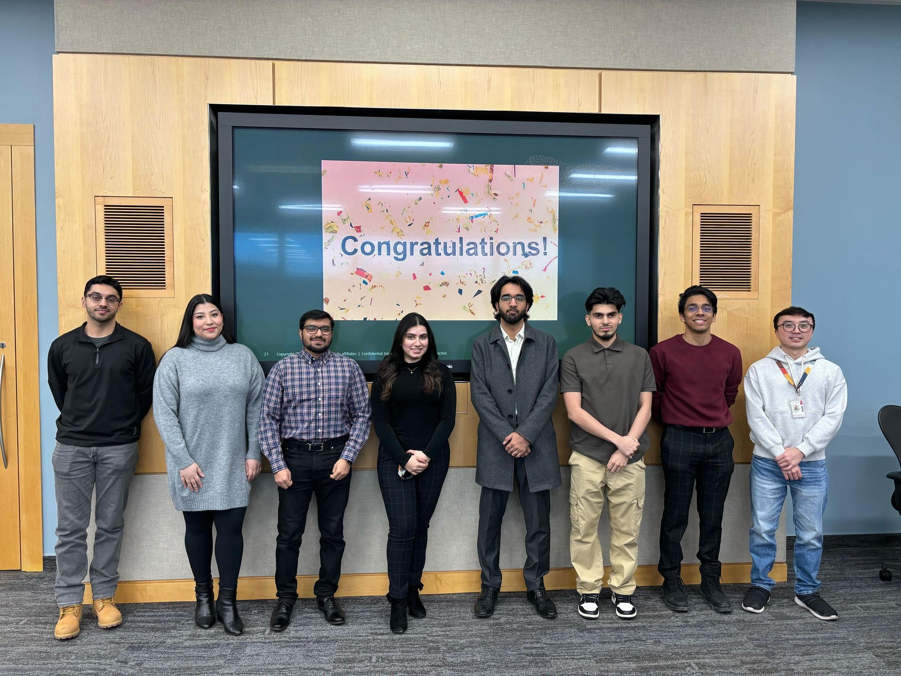
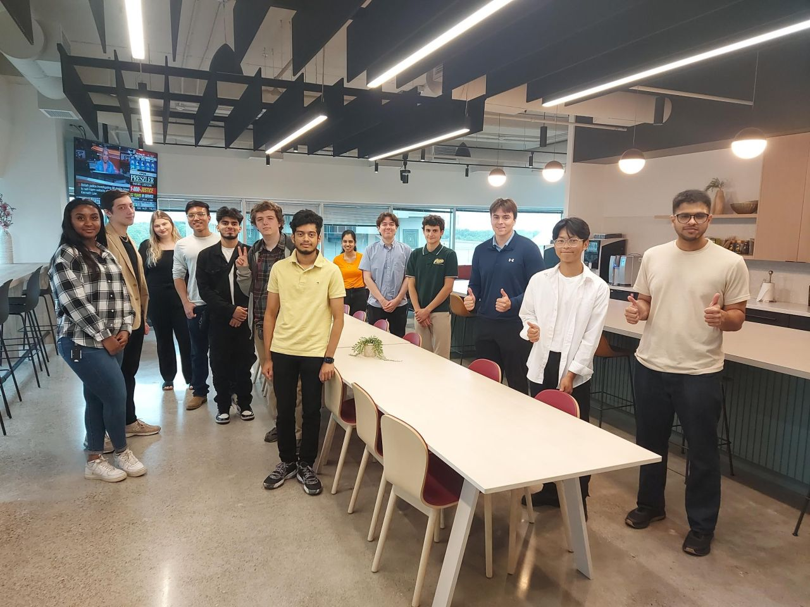

My Future Goals
Experience at Oracle
At Oracle, my journey began with a deep dive into NetSuite products, where I quickly achieved a 96% proficiency level. This was more than just a metric; it symbolized my swift adaptability and my ability to enhance key business processes. In particular, I focused on improving the Order to Cash process, which led to a significant 27% reduction in customer inquiries and a 40% increase in transaction processing efficiency.
Such strides in operational excellence also translated to a substantial 25% boost in client satisfaction, thanks to meticulous data analytics and user interface enhancements.
Enhancing SDLC at Tarion
My tenure at Tarion was another cornerstone of my professional development, sharpening my expertise in the Software Development Life Cycle (SDLC). Here, I crafted detailed documents and flowcharts that clarified and streamlined systems and services, thereby enhancing system understanding across departments.
Leadership at Access Storage

In my role at Access Storage as a Marketing Campaign Supervisor, I navigated the challenges of managing a diverse team and liaised with a broad network of vendors. This role was pivotal in refining my leadership, project management, and strategic planning skills.
Education and Certifications
My academic pursuits and professional development are backed by certifications in Google Data Analytics, Python Fundamentals, and McGill Financial Management. My proficiency doesn't end there; it extends to a suite of software including MS Office, JIRA, SalesForce, and programming languages such as Python, SQL, HTML/CSS, R, and JavaScript.
Volunteer Role in Education

Beyond my professional commitments, I've served as the Director of Education at the Toronto Metropolitan Consulting Association. Here, I've had the profound opportunity to influence aspiring consultants through initiatives like the Case Buddy Program and a series of skill-building workshops. These endeavors emphasize problem-solving, data analysis, and effective client communication — crucial skills for the consulting industry.
Career Aspirations
This amalgamation of technical acumen, real-world experience, and unwavering dedication to growth is the foundation of my aspiration to become a consultant. I am propelled by a vision to assist businesses in their digital transformation journeys, offering innovative solutions crafted from a robust tech and business-oriented background to navigate today's complex market landscapes.